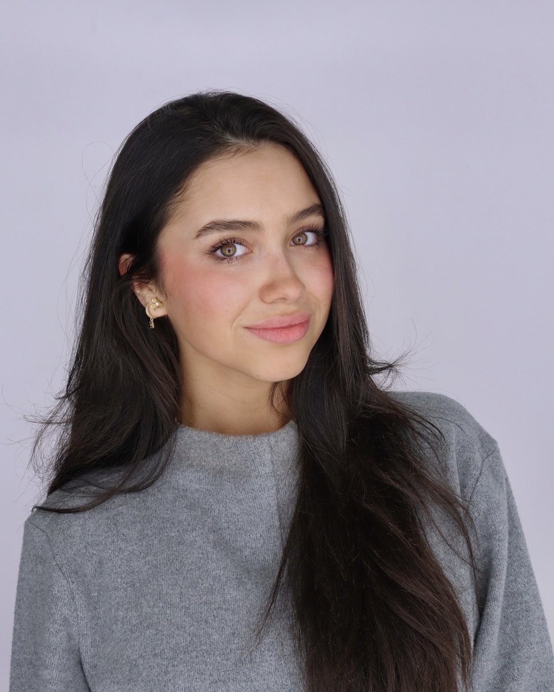
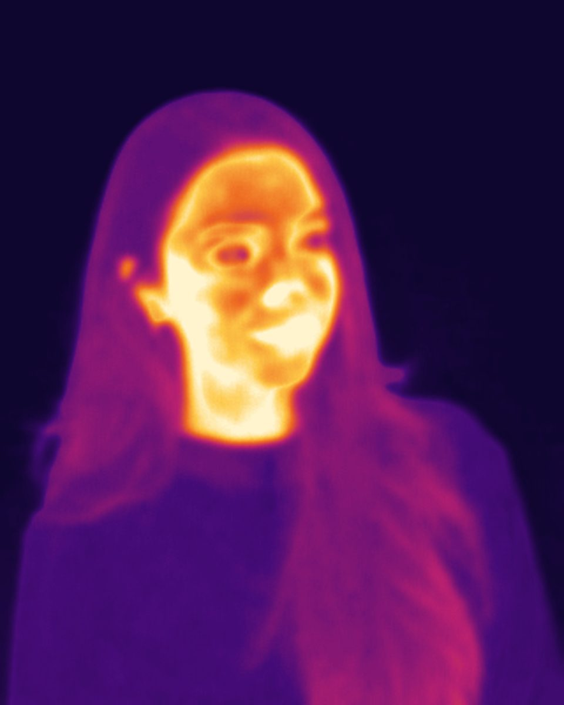

Roberta Henriquez
Electrical and computer engineer. I build AI that has to work outside the notebook, starting with breast cancer screening for rural communities.
Graduating from the University of Memphis in May 2027. Open to machine learning, computer vision and software roles, remote or in Nashville, Boston, New York or Houston.


ThermalSense
Founder and lead engineer
I founded ThermalSense to bring a quick, radiation-free breast screening to places where the nearest mammography center is a long drive away.
How it works
-
Capture
A pharmacist or community health worker takes a thermal image with a handheld FLIR camera.
-
Analyze
A deep learning model running on the device looks for abnormal heat patterns. Images stay encrypted on the device.
-
Refer
Anyone flagged is sent for mammography. The tool helps decide who should go first; it doesn't replace imaging.
Where it stands
- Model
- ResNet50 fine-tuned on the DMR-IR breast thermography dataset: about 87% validation accuracy and an AUC of about 0.92, converted to TensorFlow Lite for on-device use.
- Regulatory path
- FDA Class II through 510(k), with a Software as a Medical Device layer.
- Next milestone
- IRB-approved clinical data collection with hospital partners.
- Pitched at
- The DEBUT Challenge and the AWS AI Pitch Competition in Memphis, 2026.
Working in medical imaging, women's health or rural health? I'd like to hear from you.
Selected work
Software, hardware and machine learning projects from class, client work and my own time.
-
Service status and incident platform
A status-page and incident-management system like the ones AWS and Slack run. It checks the health of each service on a schedule, moves incidents from investigating to resolved, alerts subscribers by email and webhook, and publishes a public status page. I built the AI incident summaries: the model drafts each update and a person approves it before it goes out.
-
Workforce placement portal
A full-stack web app for a staffing firm that places engineers with U.S. manufacturers. Separate portals for admins, employers and candidates; admin-only accounts with one-time passwords; resume uploads; visa and document tracking; and a billing dashboard with monthly recurring revenue by client.
-
Venture CRM
A lightweight CRM for founders to track contacts, deal stage and follow-ups. Built for my Software Engineering course and designed to become the tool I use for ThermalSense investor and partner relationships.
-
Assistive navigation system
My senior design project with team Novatech: a navigation aid for people with visual impairments that pairs a sensor-equipped cane with an AI camera headset that describes obstacles and surroundings through audio. Research this fall, build in the spring.
-
Good posture reminder
A wearable that notices slouching and nudges you with a gentle vibration. It reads orientation from an IMU and uses calibrated thresholds to tell a real posture change from normal movement.
-
S&P 500 trend forecasting
Forecasting S&P 500 trends with market, cash-flow and macroeconomic data from Bloomberg terminals. A full pipeline from extraction and cleaning through feature engineering, training and backtesting, comparing linear regression with an LSTM on MSE and R².
-
CNN image classifier
A convolutional network built from scratch that reaches over 90% accuracy, with normalization, data augmentation and train, validation and test splits, plus loss-curve tracking to catch overfitting early.
About
I'm finishing a double degree in Electrical Engineering and Computer Engineering at the University of Memphis. The combination is the point: I can follow a problem from the analog front end and the firmware up to the model and the web app someone actually uses.
Outside class I run ThermalSense, build websites for Memphis small businesses, and co-founded Omnia Trading, a consumer products company that sells on Amazon. Starting things has taught me to talk to customers early, do the math before spending money, and finish what I start.
I speak English, Spanish and Italian, and I read French.
Experience
- Founder, ThermalSense Now
- Web developer, freelance Now
- Co-founder, Omnia Trading LLC Since 2026
- Document and quality control intern, Eurotranciatura USA 2021
Skills
- Machine learning
- TensorFlow, Keras, TensorFlow Lite, scikit-learn, XGBoost, CNNs, transfer learning, time series
- Software
- Python, Java, JavaScript, C, C++, SQL, R, Django, Next.js, Git, Linux
- Hardware
- MATLAB, Simulink, VHDL, ESP32, sensors and IMUs, circuit design, control systems, signal processing
Contact
Hiring, building something in health tech, or just want to talk shop? Send a message and I'll get back to you.